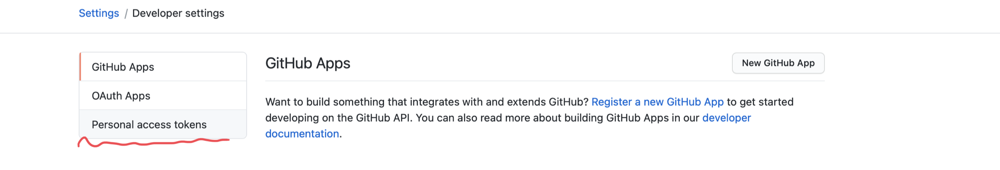

Hello!

①ターミナルを開いて、gitがあるかを確認。
git --version
②mkdir mygitでディレクトリを作成。
mkdir mygit
③④⑤初期設定のために、以下を順番に打ち込む。
git init
git config --global user.email "メアド"
git config --global user.name "名前（アルファベット）"
①右上のプラスのところから、New repositoryを開く。

②画像の通りに入力・選択する。

③この画面から、Sttingを選択する。
④下の方にスクロールしていき、mainを選択してsaveを押す。

①右上から、Settingに移動

②Developer Settingへ移動

③Personal access tokenへ移動

③そしてここで作成
緑色のボタンを押して、画像の通りにコードをコピー。
再びターミナルで下記を入力。cdはchange directoryの略。
cd mygit
さらに下記を入力し、先ほどコピーしたものをペーストする。
git clone リポジトリのURL
mygitの中にdoyolabというフォルダができて、doyolabフォルダの中にREADME.mdファイルが入っていれば成功。

VSコードを、セーブしたことを確認して、画像の通り入力する。
・
cd mygit/doyolab
一度ターミナルを閉じている場合は、上記を先に入力してから行う。
①
git add .
②
git status
（どちらでも良い）
③
git commit -m"メッセージ"
※これをしっかり更新した日付にすること。
④ git push